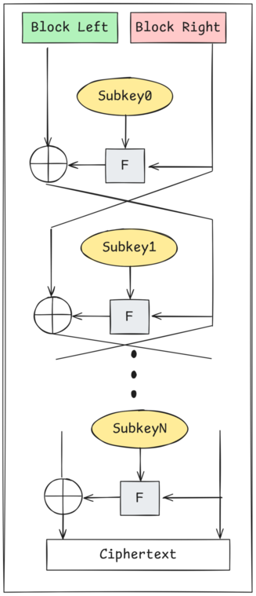
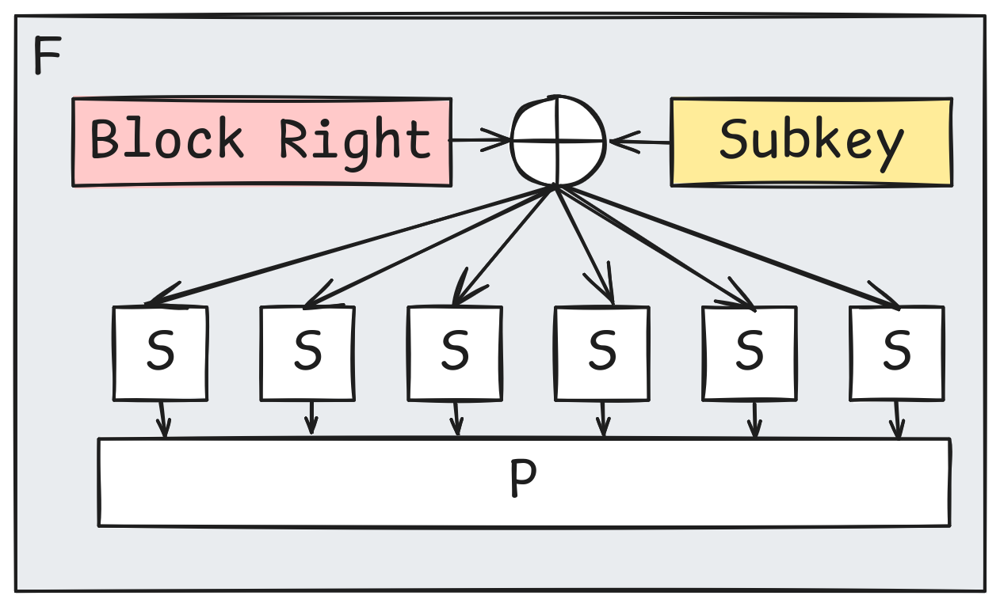
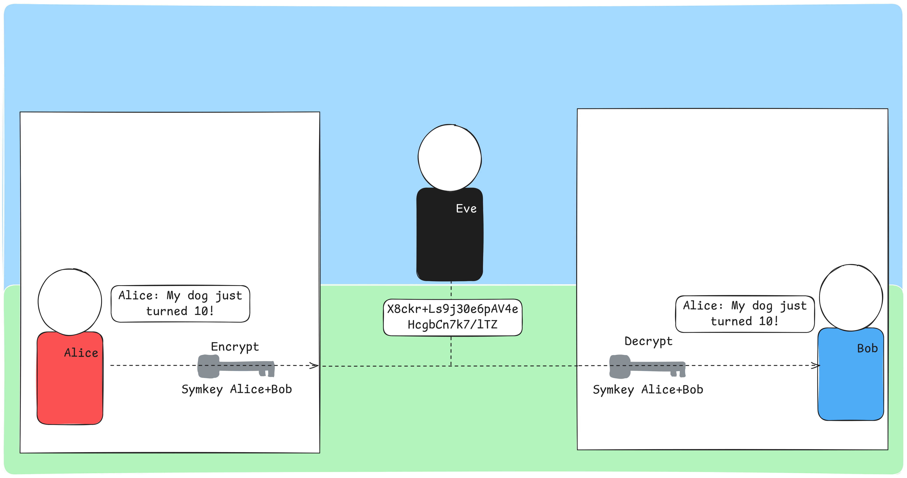
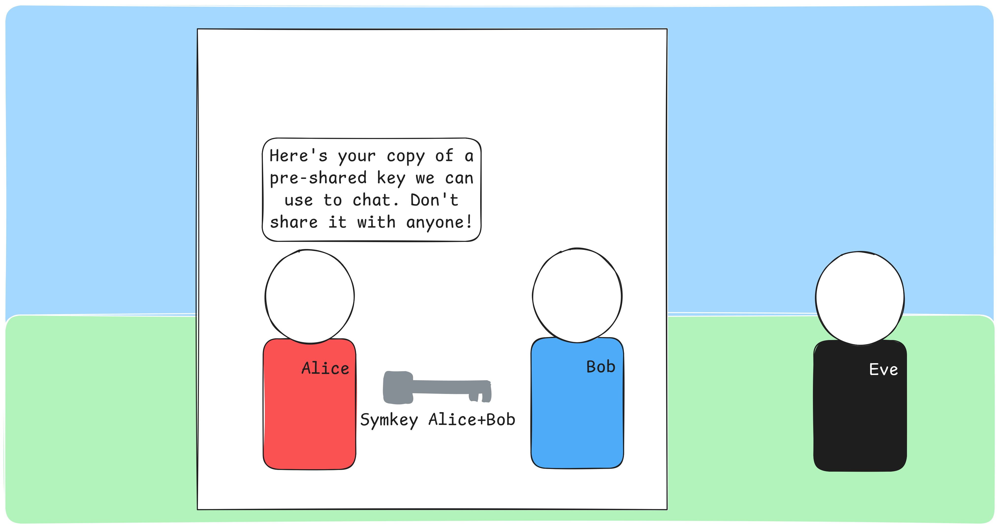
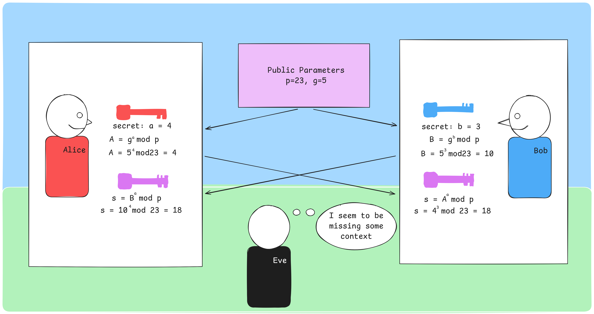
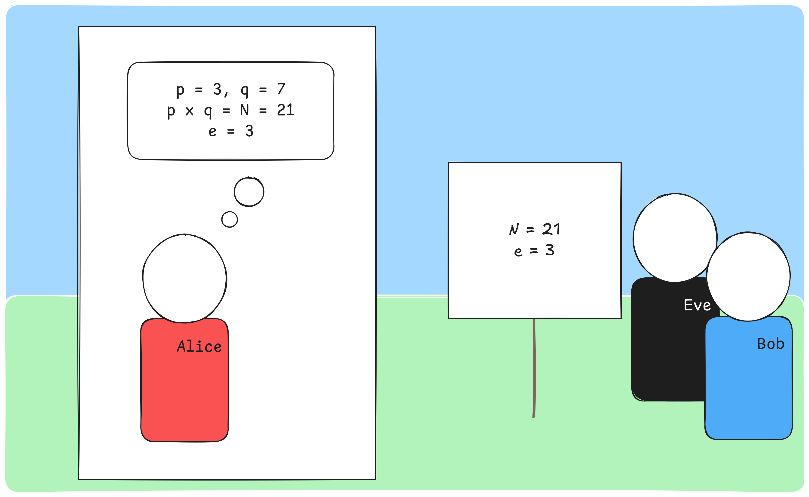
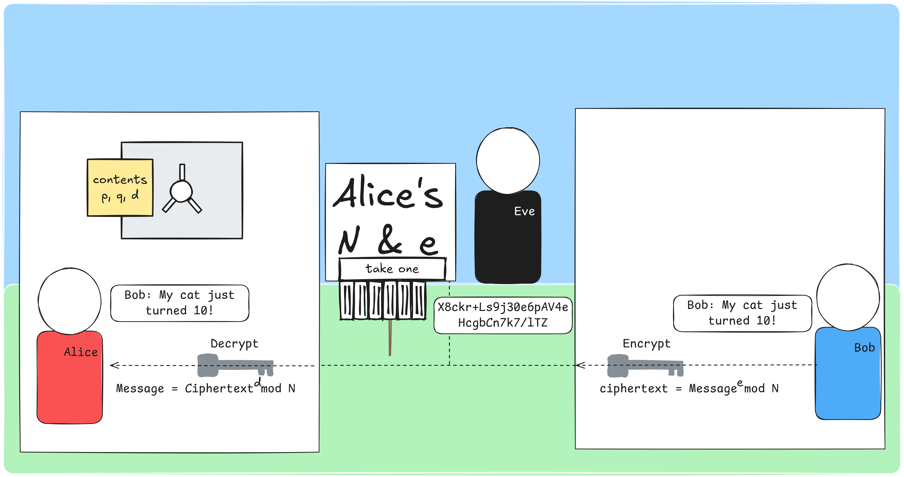
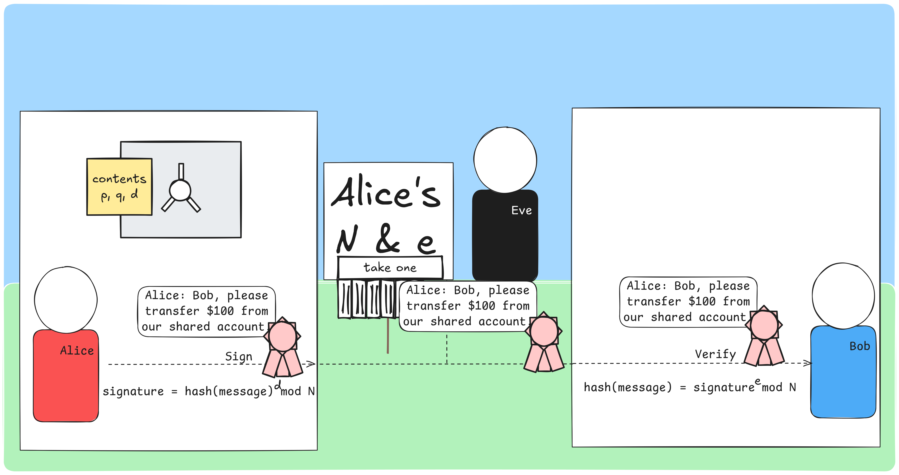
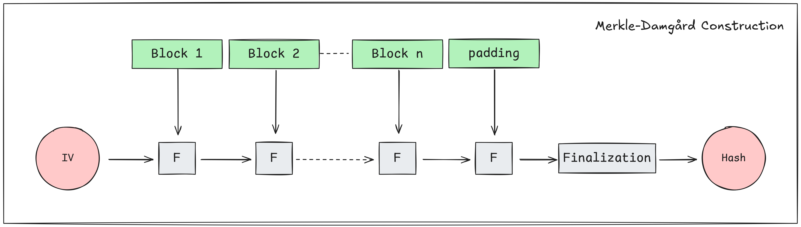
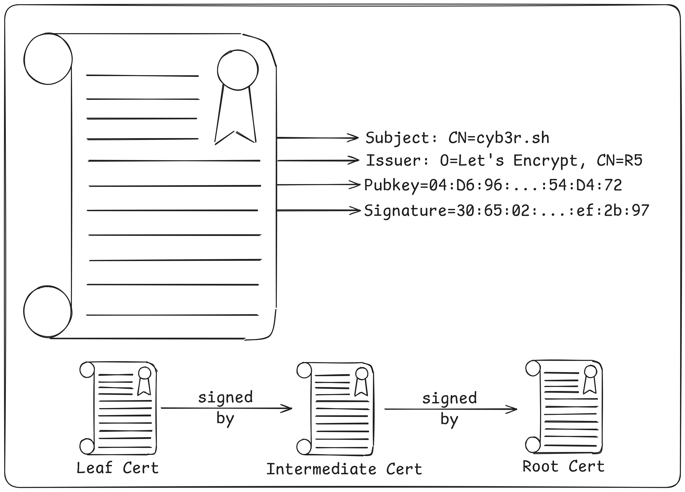

2026-06-20
This post is an expanded version of a talk I gave at NoCo Hackers in August 2025. The goal is to provide:
Many details will be left out in order to focus on broader concepts and the examples I use are “classic” concepts like RSA and DES as opposed to more recent innovations like ECDSA and AES. I also completely ignore post-quantum cryptography. I am not a cryptographer, but I apply many of these concepts in my day to day.
Each section includes hands-on exercises you can follow along with
using standard linux utilities like openssl.
Click again to collapse.
Symmetric encryption uses a single key for both encryption and decryption. The implementation can vary quite a bit, but common algorithms include 3DES, Blowfish, AES and ChaCha20. If you work in tech, you’ve likely heard of some of these. Since you’re on my website, you either used ChaCha20 or AES to load this page1.
While the concept sounds similar to substitution ciphers2 many of us used on the playground as kids, substitution ciphers are vulnerable to techniques like frequency analysis and known plaintext attacks. Modern symmetric encryption prevents these methods from working by scrambling the output in addition to performing substitution.
Just how secure are these algorithms? Using today’s technology, 128-bit AES would take more than the current age of the universe to crack3. 256-bit AES is likely quantum safe, assuming no new quantum algorithms produce speed-ups beyond that of Grover’s algorithm4. They are quite good, assuming you can securely manage your keys.
Symmetric block ciphers such as DES and Blowfish are built on a structure called a Feistel network. An input block is split into left and right halves, and a round function F is applied repeatedly with different subkeys derived from the main key. Each round mixes the data further, and after enough rounds, the output is effectively indistinguishable from random noise.

In the DES round function, the right half of the block is XORed with a subkey, then passed through S-boxes that substitute chunks of bits (providing confusion - obscuring the relationship between key and ciphertext), followed by a permutation that rearranges the bit positions (providing diffusion - spreading each input bit’s influence across the output).

Not all block ciphers are built on Feistel networks. For instance AES uses a much different architecture featuring a substitution-permutation network. The underlying idea is still the same. Take a block, substitute, permute and repeat.
In practice, Alice and Bob share a secret key. When Alice wants to send a message, she encrypts it with the shared key. The ciphertext travels across the network where Eve can see it, but without the key, it’s just gibberish. Bob decrypts it with his copy of the same key.

Let’s encrypt and decrypt a file using GPG with AES-256. First, create a file to encrypt:
┌─(you@workshop)-[~/tls_workshop]
└─$ echo "In the realm of cryptographic lore,
Live three souls we all adore,
Alice sends her secrets bright,
Bob receives them in the night." > poem.txtEncrypt the file with AES-256. You’ll be prompted for a passphrase:
┌─(you@workshop)-[~/tls_workshop]
└─$ gpg --output poem.txt.enc --symmetric --cipher-algo AES256 poem.txtTake a look at the encrypted file - it’s unreadable:
┌─(you@workshop)-[~/tls_workshop]
└─$ more poem.txt.enc
c^L)poO^LM"6!=U,(o_WoMYG\uibz/?sg[ö_B21'OH_7|#@?)D2We can verify it’s actually AES-256 encrypted data:
┌─(you@workshop)-[~/tls_workshop]
└─$ file poem.txt.enc
poem.txt.enc: PGP symmetric key encrypted data - AES with 256-bit key salted & iterated - SHA512 .Now decrypt it into a new file and verify the contents match:
┌─(you@workshop)-[~/tls_workshop]
└─$ gpg --output poem2.txt --decrypt poem.txt.enc
gpg: AES256.CFB encrypted data
gpg: encrypted with 1 passphrase
┌─(you@workshop)-[~/tls_workshop]
└─$ sha256sum poem.txt poem2.txt
421fa5b43f8cf383c66966c033343adc9c4cbba4119664d8c552713e806e7476 poem.txt
421fa5b43f8cf383c66966c033343adc9c4cbba4119664d8c552713e806e7476 poem2.txtThe SHA-256 hashes match - the decrypted file is identical to the original.
There’s a fundamental issue with symmetric encryption: how do Alice and Bob agree on a shared key in the first place? If they can meet in person and exchange a key, great. But what if they’re on opposite sides of the internet and have never communicated before?

They can’t just send the key over the network in plaintext - Eve would intercept it. They need a way to agree on a shared secret over an insecure channel. Enter Diffie-Hellman.
Diffie-Hellman allows two parties to establish a shared secret over an insecure channel. Here’s how it works:

A small example: with p = 23 and g = 5, if Alice picks a = 4 and Bob picks b = 3:
Both arrive at 18 without ever transmitting their secret values. Eve sees p, g, A and B, but cannot efficiently compute s.
Some important notes on parameter selection: p must be a prime number (2048-bit is the current best practice). g should be a primitive root of p (aka a generator). The choice of a and b are less important, but there are “weak” keys that should be avoided.
Use OpenSSL to generate Diffie-Hellman parameters. This will take a moment as it needs to find a suitable large prime:
┌─(you@workshop)-[~]
└─$ openssl genpkey -algorithm dh -genparam -textThis outputs the DH parameters including the prime p and generator g. In practice, these parameters are negotiated as part of the TLS handshake.
Diffie-Hellman works due to the Discrete Logarithm Problem:
Modular arithmetic is not intuitive. A few examples:
Try it yourself:
The selection of g is important. g is a primitive root modulo n if for every integer a coprime to n, there is some integer k for which gk ≡ a (mod p). While this is complicated to the point of nonsense without defining multiple terms, these numbers have an interesting property:
Explore this yourself. Try g = 2, p = 11 (a primitive root), then try g = 3, p = 11 (not a primitive root) and notice how 3 fails to produce all remainders:
If p is a 2048-bit integer such as:
300396648896056517967822789849851342061039737840497444694298029812868780991612
616546929927248598372661584089789602159266747365345985697362943273589428015143
016773149946315701041271641014512529437108063589612811583585838245047403956855
795246762650874918515999483338962432177317675184887766781763712231372305303916
152762734067057282167451220484749501274315183531761085778634261192080104872288
357240136773198003137851673885785239532397645643423686563947798011817173222358
195851978881109660891980662046175013305288876827537293648722280166850584485979
179022443434756151783609647880324673922252042888634076559224189862075342037And g is a generator, there is no efficient way to solve for k.
Step through a Diffie-Hellman key exchange. Pick your parameters and secrets, then watch Alice and Bob arrive at the same shared secret while Eve is left in the dark.
RSA is an asymmetric encryption algorithm. Unlike symmetric encryption, it uses a pair of keys: one public, one private. It’s named after Rivest, Shamir and Adleman who published it in 19775.
The important parts:
e and N should be made publicly available. These make up the public key.
p, q and d should be kept private. These make up the private key.

Anyone can encrypt a message to Alice using her public key. Only Alice can decrypt it with her private key:

RSA can also provide authentication and integrity. Alice can sign a message with her private key, and anyone with her public key can verify the signature:

Notice that Eve can see the message (signing doesn’t encrypt it), but she can’t forge Alice’s signature without Alice’s private key. This gives Bob confidence the message actually came from Alice and hasn’t been tampered with.
RSA works because there is no known algorithm to efficiently find the prime factors of large composite numbers. When N is the product of two large primes (each 1024+ bits), factoring N to recover p and q is computationally infeasible with current technology.
Generate a 2048-bit RSA key pair:
┌─(you@workshop)-[~/tls_workshop]
└─$ openssl genrsa -out private.pem 2048Extract the public key:
┌─(you@workshop)-[~/tls_workshop]
└─$ openssl rsa -in private.pem -pubout -out public.pem
writing RSA keyEncrypt a message with the public key:
┌─(you@workshop)-[~/tls_workshop]
└─$ echo "noco hackers" | openssl pkeyutl -encrypt -pubin -inkey public.pem -out ciphertext.outExamine the ciphertext - it’s binary garbage:
┌─(you@workshop)-[~/tls_workshop]
└─$ xxd ciphertext.out | head -5
00000000: 6722 383e 758a 0788 f0ec d4e8 dfd6 5a55 g"8>u.........ZU
00000010: 1a47 3926 22bd ae79 952b 5719 9419 2b64 .G9&"..y.+W...+d
00000020: bd1e a72b 8eb1 b8bb f816 ea55 d63a 747e ...+.......U.:t~
00000030: 2b00 c05b e245 140c 3023 63f4 0189 e522 +..[.E..0#c...."
00000040: 6fd4 c1ad ebf3 ee38 065d 626c b56a 6ad3 o......8.]bl.jj.Decrypt it with the private key:
┌─(you@workshop)-[~/tls_workshop]
└─$ openssl pkeyutl -decrypt -inkey private.pem -in ciphertext.out
noco hackersHash algorithms should be:
Let’s see this in action. Notice how changing a single character (“hackess” vs “hackers”) completely changes the hash:
┌─(bjames@llpt03)-[~/tls_workshop]
└─$ echo -n "noco hackess" | xxd -b
00000000: 01101110 01101111 01100011 01101111 00100000 01101000 noco h
00000006: 01100001 01100011 01101011 01100101 01110011 01110011 ackess
┌─(bjames@llpt03)-[~/tls_workshop]
└─$ echo -n "noco hackers" | xxd -b
00000000: 01101110 01101111 01100011 01101111 00100000 01101000 noco h
00000006: 01100001 01100011 01101011 01100101 01110010 01110011 ackersOnly a single bit differs between the two inputs (the s
vs r), but the SHA-256 output is completely different:
┌─(bjames@llpt03)-[~/tls_workshop]
└─$ echo "noco hackers" | sha256sum
85a29cdad0e9979136366475928434e879fcdfd5f609d74d16852da053ced22c -
┌─(bjames@llpt03)-[~/tls_workshop]
└─$ echo "noco hackess" | sha256sum
517163d51822495d2fcb7f163c2449284a5ed52ae3dfb2fc1ed4c818535f7232 -This is the avalanche effect in action.

Many hash algorithms (including SHA-256) use the Merkle-Damgård construction. The message is broken into blocks, and each block is fed through a compression function F along with the output of the previous block. The first block uses an initialization vector (IV). This chaining ensures that every bit of the input affects the final hash.
Cryptographic certificates are effectively:

Typically certificates are chained. Intermediate and leaf certificates are exchanged during the TLS handshake, while root certificates are deployed via OS/web browser updates or via some other automated mechanism (Active Directory, devops tools, SCEP, etc).
When a Certificate Authority (CA) processes a certificate signing request (CSR), it takes the public key and metadata from the CSR, then adds in some metadata of its own. Once complete, the CA uses its private key to sign the contents of the certificate.
The CA’s public key can then be used to validate that the certificate was A) signed by the CA in question and B) has not been tampered with.
TLS and by extension x.509 combine symmetric encryption, asymmetric encryption, key exchange protocols and hash algorithms. Here’s what a real TLS cipher suite looks like, scanned from cyb3r.sh:
┌─(bjames@llpt03)-[~]
└─$ nmap -sV --script ssl-enum-ciphers -p 443 cyb3r.sh
Starting Nmap 7.92 ( https://nmap.org ) at 2025-08-21 10:36 MDT
Nmap scan report for cyb3r.sh (165.227.88.41)
Host is up (0.0080s latency).
PORT STATE SERVICE VERSION
443/tcp open ssl/http nginx 1.20.1
|_http-server-header: nginx/1.20.1
| ssl-enum-ciphers:
| TLSv1.2:
| ciphers:
| TLS_ECDHE_ECDSA_WITH_AES_128_GCM_SHA256 (secp256r1) - A
| TLS_ECDHE_ECDSA_WITH_AES_256_GCM_SHA384 (secp256r1) - A
| TLS_ECDHE_ECDSA_WITH_CHACHA20_POLY1305_SHA256
| TLSv1.3:
| ciphers:
| TLS_AKE_WITH_AES_128_CCM_SHA256 (secp256r1) - A
| TLS_AKE_WITH_AES_128_GCM_SHA256 (secp256r1) - A
| TLS_AKE_WITH_AES_256_GCM_SHA384 (secp256r1) - A
| TLS_AKE_WITH_CHACHA20_POLY1305_SHA256 (secp256r1) - A
|_ least strength: ALet’s break down
TLS_ECDHE_ECDSA_WITH_AES_128_GCM_SHA256:
Every concept from this post comes together in a single cipher suite name.
In this exercise, we’ll create our own certificate authority, an intermediate CA, and a server certificate - the same chain of trust your browser validates every time you visit an HTTPS site.
Generate the root CA private key and self-signed certificate:
┌─(you@workshop)-[~/tls_workshop]
└─$ openssl req -x509 -newkey rsa:4096 -keyout root-key.pem -out root-cert.pem -days 365 \
-subj "/CN=Workshop Root CA" -nodesGenerate the intermediate CA key and a certificate signing request (CSR):
┌─(you@workshop)-[~/tls_workshop]
└─$ openssl req -newkey rsa:4096 -keyout intermediate-key.pem -out intermediate.csr \
-subj "/CN=Workshop Intermediate CA" -nodesSign the intermediate CSR with the root CA:
┌─(you@workshop)-[~/tls_workshop]
└─$ openssl x509 -req -in intermediate.csr -CA root-cert.pem -CAkey root-key.pem \
-CAcreateserial -out intermediate-cert.pem -days 180Generate a server key and CSR:
┌─(you@workshop)-[~/tls_workshop]
└─$ openssl req -newkey rsa:2048 -keyout server-key.pem -out server.csr \
-subj "/CN=workshop.local" -nodesSign the server CSR with the intermediate CA:
┌─(you@workshop)-[~/tls_workshop]
└─$ openssl x509 -req -in server.csr -CA intermediate-cert.pem -CAkey intermediate-key.pem \
-CAcreateserial -out server-cert.pem -days 90Now verify that the entire chain is valid:
┌─(you@workshop)-[~/tls_workshop]
└─$ openssl verify -CAfile root-cert.pem -untrusted intermediate-cert.pem server-cert.pem
server-cert.pem: OKYou can also inspect any certificate in the chain:
┌─(you@workshop)-[~/tls_workshop]
└─$ openssl x509 -in server-cert.pem -text -noout | head -15This is fundamentally the same process that Let’s Encrypt, DigiCert and every other CA uses to issue certificates - just at a much larger scale with more rigorous identity verification.
We’ve covered symmetric encryption, key exchange, hashing, asymmetric encryption, and how they all come together in TLS. This post originated as a talk at NoCo Hackers, a meetup for anyone interested in technology, security and hacking in Northern Colorado. If you’re in the area, come hang out with us.
Unless my cipher suites have changed since the time of writing, you used either AES-128-GCM, AES-256-GCM or ChaCha20-Poly1305 to load this page.↩︎
GRPQ FK ZXPB FQP KLQ LYSFLRP COLJ QEB KXJB, QEFP FP X PRYPFQRQFLK ZFMEBO↩︎
Stack exchange is a reliable source right?↩︎
Seriously, do I cite anything other than stack exchange?↩︎
The algorithm was independently discovered by Clifford Cocks at GCHQ in 1973, but was classified until 1997.↩︎